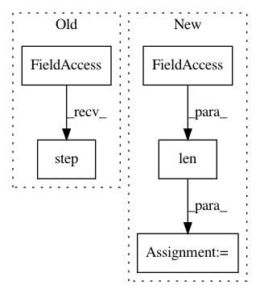

61228f3243eaee39cba31a9abd2afc6ead9612a8,implementations/bicyclegan/bicyclegan.py,,,#,136
Before Change
epoch=epoch, batch=i)
// Update learning rates
lr_scheduler_G.step()
lr_scheduler_D_VAE.step()
lr_scheduler_D_LR.step()
if opt.checkpoint_interval != -1 and epoch % opt.checkpoint_interval == 0:
After Change
// --------------
// Determine approximate time left
batches_done = epoch * len(dataloader) + i
batches_left = opt.n_epochs * len(dataloader) - batches_done
time_left = datetime.timedelta(seconds=batches_left * (time.time() - start_time)/ (batches_done + 1))
// Print log
sys.stdout.write("\r[Epoch %d/%d] [Batch %d/%d] [D VAE_loss: %f, LR_loss: %f] [G loss: %f, pixel: %f, latent: %f] ETA: %s" %
In pattern: SUPERPATTERN
Frequency: 4
Non-data size: 5
Instances
Project Name: eriklindernoren/PyTorch-GAN
Commit Name: 61228f3243eaee39cba31a9abd2afc6ead9612a8
Time: 2018-05-04
Author: eriklindernoren@gmail.com
File Name: implementations/bicyclegan/bicyclegan.py
Class Name:
Method Name:
Project Name: pytorch/tutorials
Commit Name: 3128e13109c8766eafb413f2428bba976701e929
Time: 2020-12-02
Author: 6156351+zhangguanheng66@users.noreply.github.com
File Name: beginner_source/transformer_tutorial.py
Class Name:
Method Name:
Project Name: NervanaSystems/coach
Commit Name: 9e9c4fd3322b6e8f47572fefdb8fd65018fb96f7
Time: 2019-05-27
Author: gal.leibovich@intel.com
File Name: rl_coach/exploration_policies/e_greedy.py
Class Name: EGreedy
Method Name: get_action
Project Name: ray-project/ray
Commit Name: 428516056abe41f135133e732a8d44af6ce9a234
Time: 2020-04-15
Author: sven@anyscale.io
File Name: rllib/policy/torch_policy.py
Class Name: TorchPolicy
Method Name: learn_on_batch